Einen Diskussionsstand und Tipps zu ZackZackOrdner sind im ForenBeitrag
https://autohotkey.com/boards/viewtopic.php?f=10&t=15248
nachlesbar. 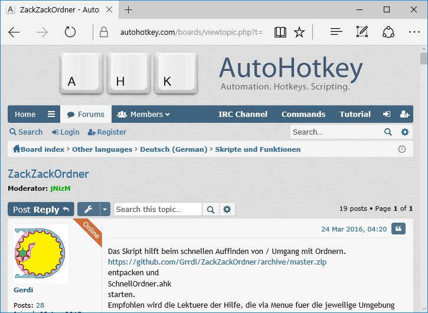
Die aktuellsten ZackZackOrdner InstallationsDateien können hier
https://github.com/Grrdi/ZackZackOrdner/archive/master.zip
heruntergeladen werden.
Den Ordner ZackZackOrdner-master 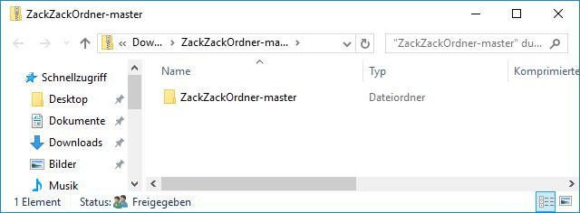in das Wunschverzeichnis entpacken.
Skript SchnellOrdner.ahk 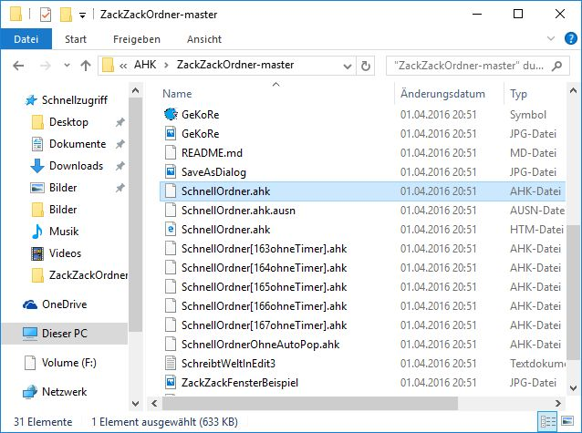 starten.
Container auf Anforderung 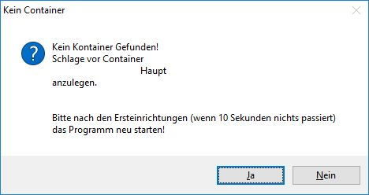 anlegen.
Start-Pfad auf Anforderung anlegen. 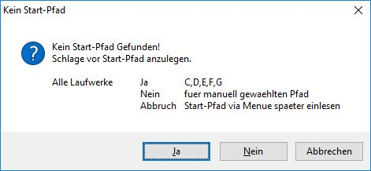
Mit Ja werden alle Laufwerke mit Buchstaben Ihres PC's eingelesen.
AlleLaufwerke.awpf auswählen 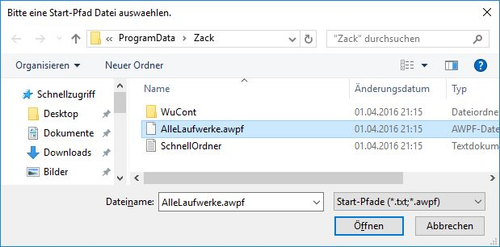
(Die Datei kann auch mit einem Editor bearbeitet werden, sie wurde soeben dynamisch
erstellt.)
und mit öffnen absenden.
Laufwerke oder Pfade können manuell eingeben werden
entweder in der aufgehenden Fileselect-Box
oder nach Abbruch mit Escape
durch Eingabe eines Pfades Schreibweise siehe unten.
später erledigen (das Programm ist solange nutzlos)
Ein Pfad wird mit \* beendet Beispiele:
c:\*
d:\*
c:\Users\UserName\*
\\ServerName\FreigabeName\Ordner\*
Während des Einlesens 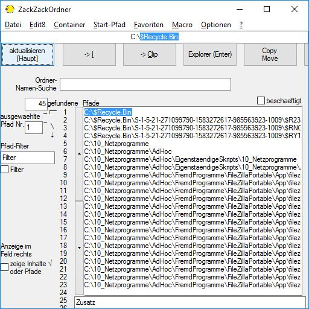
können schon erste Suchen erfolgen.
Die Fundstellen sind dann natürlich nicht vollständig. Jeder Start-Pfad
wird mit einem End-Dialog
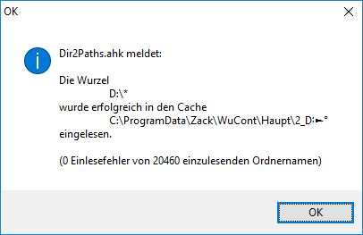
für ein paar Sekunden bestätigt. Wenn 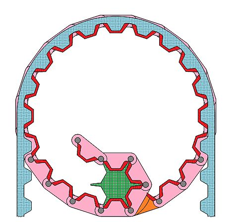Dir2Paths.ahk
nichtr mehr bei den ausgeblendeten Symbolen sichtbar ist,
dann sind alle Start-Pfade eingelesen.
Die 1. Einlesezeit kann sinnvoll verwendet werden z.B. um die mitgelieferten
Macros einzurichten.
Menue: Macro | Muster-Dateien ...
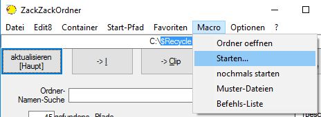
Macro Datei auswählen
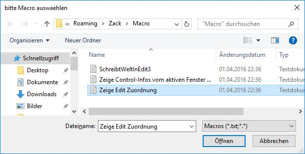
oeffnen führt zur Anzeige der Edit#-Orte.
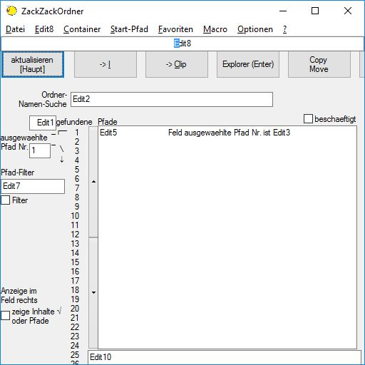
Diese Edit#-Felder Bezeichner werden im Hilfetext verwendet. D.h. statt im großen
Feld in dem die Pfade angezeigt werden wird nur Edit5 verwendet.
Die fehlenden Edit-Felder sind bis auf Edit9 erst im Fortgeschrittenen Modus
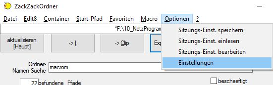
bei Auswahl Nein
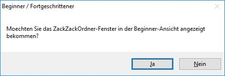
sichtbar.
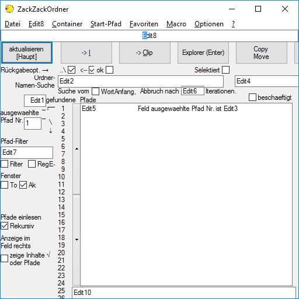
Edit9 ist momentan unbenutzt.
Edit3 bleibt im Feld ausgewählte Pfrad Nr nicht stehen, deshalb wurde es
durchs Macro rechts davon im Edit5-Feld mit aufgenommen.
werden in ZackZackOrdner ähnlich wie die Bewertungs-Sterne in Musiksammlungen
angezeigt.
Allerdings bewirkt hier ein Stern,
zum einen das nach vorne rutschen bei der Sortierung
und Pfade mit Stern(en) gehen auch als Kopieen ins Rennen
(eine Kopie egal wieviele Sterne > 0)
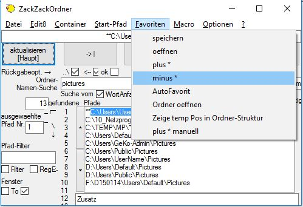
Ein Stern wird entfernt.
Mit den ZackZack Favoriten kann man einige Suchen vermeiden bzw abkürzen,
weil die Favoriten nach oben sortiert werden.
Man kann sich aber auch so etwas wie einen Verteiler zusammenstellen.
Die Favoriten eines Containers landen alle in einem Cache-Ordner Namens !Fav
.
In einem Unterordner des sich öffnenden Ordners bei Menue | Datei
| Data Ordner oeffnen .
Voreingestellt erhält jeder Ordner, der mit Button 2 oder 4 benutzt wird
automatisch maximal einen Stern.
Diese Einstellung ist im Menue veränderbar
-1-> deaktiviert
3 würde bedeuten, dass der Pfad nach 3 maliger Benutzung seinen maximalen
Sterne-Wert erreicht hat.
Die Grundeinstellung wurde auf AutoFavorit:=1 auf 0 geändert. D.h. AutoFavoriten
werden zwar angelegt aber ohne Stern.
Sie fallen jedoch nicht besonders auf. Benötigt werden sie, wenn von ZZO
neue Ordner angelegt werden, dass nicht jedesmal der Start-Pfad neu eingelesen
werden muss.
Vermutlich wird noch so geändert, dass nur dann sternlose AutoFavoriten
angelegt werden.
Wer solange dauerhaft AutoFavorit:=-1 haben möchte, kann eine Datei mit
dem Inhalt
AutoFavoritVorher=0
AutoFavorit=-1
AutoFavoritAnzeigen
nach %A_AppData%\AutoEinstellungen.txt (bei Programmstart wird dieses Macro
wenn vorhanden durchgeführt.) schreiben.
(Dazu kann man: Menue: Optionen | Sitzungs-Einst. speichern gefolgt von Menue:
Optionen | Sitzungs-Einst. bearbeiten. Inhalt löschen, die 3 Zeilen rein
und im selben Ordner unter AutoEinstellungen.txt speichern)
Hier könnten auch andere (soeben gelöschte) Voreinstellungen eingetragen
werden, nur muss es dann im Hinterkopf klingeln, wenn nach einem Update nichts
mehr läuft, wenn z.B. die Voreistellung nicht mehr unterstützt wird.
Der Suchstring wird einfach in Edit2 eigegeben.
Während der Eingabe werden schon die passenden gefundenen Pfade in Edit5
angezeigt.
im Bild sanft blau 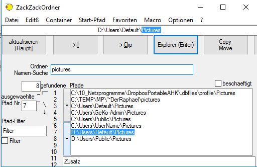 selektiert ein Feld weiter unten.
dito nur nach oben 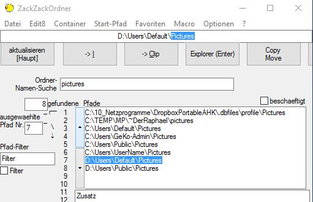
Ein positivger Integer-Wert im Feld Edit7 (im Bild die 3) ohne gesetzten Filter-Haken
bewirkt, dass nur noch in einem Start-Pfad gesucht wird.
Spezialfall: der Integer-Wert 1 aktiviert den Favoriten-Vor-Filter.
Negative Integer-Werte führen zus Ausschluss des Start-Pfades bzw. bei -1 zum Ausschluss der Favoriten.
Um herauszubekommen welcher Integer-Wert entspricht welchem Start-Pfad,
ruft man Menue | Start-Pfad | Uebersicht auf.
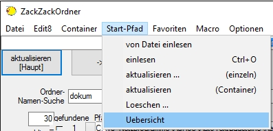
Im Folgenden Bild entspricht die Zeilennummer dem Integer-Wert des Vor-Filters
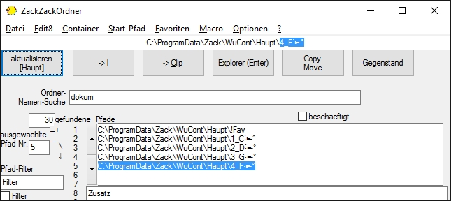
D.h. wenn man hier 3 als Vor-Filter wählt könnte es nach Klick auf
Button1 so wie im Bild unten aussehen:
Nur Pfade die mit D:\ beginnen werden angezeigt
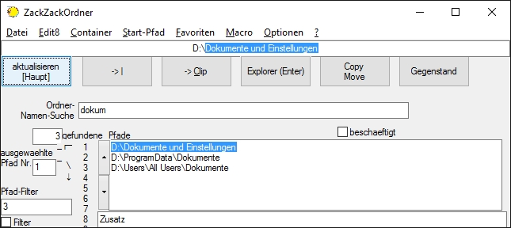
Hinweise: Die Vor-Filter machen die Suche durch weglassen schneller (ohne gesetzen
Filter-Haken)
Deutlich langsamer wird es mit gesetztem Haken.
dazu muss der Filter-Haken gesetzt sein.
Da bei der gefilterten Suche auch noch der Interne Suchabbruch hochgesetzt werden
muss,
wirds mit gesetztem Haken deutlich langsamer.
(Der Interne Suchabbruch erfolgt beim Überschreiten der maximal durchsuchten
Cache-Dateien.)
Button1 aktualisiert Edit5 und 8
Neu ab Version 0.212
Button3 speichert
Edit8 in das Clipboard (neue Aktion)
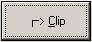 nochmaliges betätigen
von Button3 speichert Edit5 in das Clipboard (bisherige Aktion)
Um mit dem in Edit8 stehenden Pfad etwas zu machen, dienen die Buttons 2, 3,
4 und 5 (von links nach rechts) (und eventuell die Benutzer definierbaren Buttons
6 bis 10) sowie der Hauptmenue-Eintrag Edit8.
Button2 gibt im wesentlichen Edit8 ins Eingabefeld des bspw. Speichern unter
Dialoges zurück.
Button4 übergibt Edit8 einem Explorer-Fenster um darin den Edit8-Pfad zu
öffnen. Ob dazu ein neues Explorer-Fenster gestartet wird hängt von
der Historie ab.
Button5 dient zum Kopieren zu dem Ziel-Pfad der in Edit8 steht.
Mit {Enter} wird der Button betätigt, der etwas stärker umrahmt ist. Welcher das ist hängt wiederum von der Historie ab. ZackZackOrdner versucht diese Auswahl über die vorigen Schritte zu optimieren.
Button Ordner der von ZackZackOrdner (TastWatch.ahk) künstlich über das aktive Explorer-Fenster gelegt wird, aktiviert bei Betätigung das ZackZackOrdner-Fenster genau vor dem Explorer-Fenster, dem es spater den gewählten Ordner mit Button4 zurückgeben möchte.
Näheres zur gezielten Verwendung der Buttons folgt weiter unten.
Wenn ZackZackOrdner vom Benutzer eingerichtet ist, Dann kann man das Fenster
beruhigt außer Sichtweite bringen.
Es dient dann meist nur sehr kurz um Ordner auszusuchen.
Das ZackZackOrdner-Fenster kann mit folgenden Methoden schnell aktiviert werden:
| Nutzer-Aktion | gewünschtes Ereignis | Bemerkung | Zusammenarbeit mit |
| #z | unverändert aktivieren | zack-Aktivieren | kein Fremdfenster beteiligt |
| Klick auf oder ## |
überdeckend aktivieren | mit Explorer | |
| #n | daneben aktivieren | sofern der Platz reicht | mit Speichern-Unter etc. |
ZackZackOrdner kann zu Beginn der Beispiel-Szenarien jeweils minimiert sein.
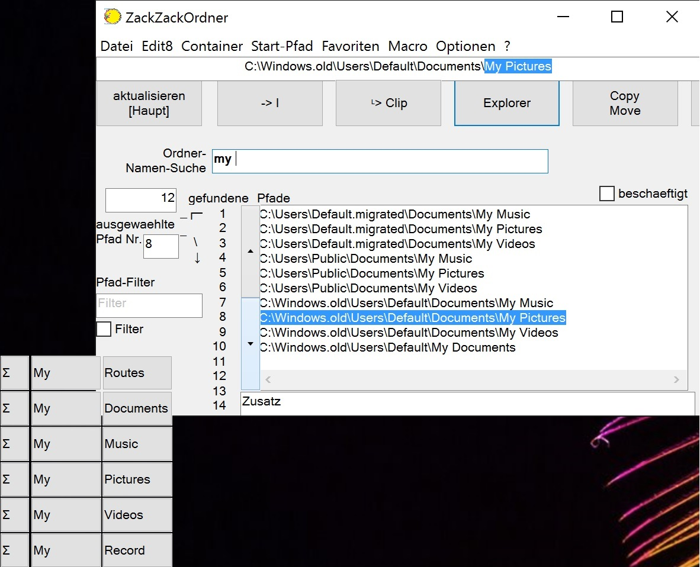
Der Cash (die Start-Pfade) muss eingelesen sein.
| klick |
| #z |
| klick Button4 Explorer |
soll bei den Aktionen gleich ein neuer Unter-Ordner angelegt werden und in
diesen gespeichert werden, so kann dieser vor Betätigung des jeweiligen
Buttons an Edit8 angehängt werden.
Beispiel: Edit8 enthält nach der Pfad-Auswahl
...\Steuern
dies wird manuel durch
...\Steuern\2016
ergänzt. Dann wird nach dem Betätigen des jeweiligen Buttons zuerst
der Unter-Ordner 2016 angelegt und dann die eigentliche Aktion des Buttons durchgeführt.
Beim Erststart wurde gefragt ob der Container Start Menu angelegt werden soll. Wurde dies bestätigt kann man bei Aktivem ZZO-Fenster:
Nun sollte das gewünschte Programm starten.
Hat man einen Ordner ausgewählt, kann man ihn wie oben beschrieben im Explorer öffnen oder
Die Buttons die links unten teilweise über dem ZZO-Fenster erscheinen, sollen helfen Such-Worte zu ergänzen.
PS. Esc blendet die Vorscchläge einmalig aus. Der AppsKey (das ist die Taste mit der Wirkung wie die rechte Maustaste) blendet bis zum Neustart aus.
Standart-mäßig wird die Suche pro Start-Pfad nach 25 übernommenen
Cache-Dateien abgebrochen.
Seit Version 0.178 erscheint die Anzahl der Gefundenen Pfade in Klammern, wenn
bei der Suche ein Abbruch vorgekommen ist.
Normalerweise kommt es zu diesem Abbruch bei Suchstringlängen > 4 nicht
und die Pfad-Liste in Edit5 ist vollständig.
Bei sehr kurzen Suchstrings z.B "e" kommt es annähernd immer
zu einer unvollständigen Pfad-Liste.
Die angezeigten Pfade sind jedoch alle richtig und meist interessieren Funde
mit 3-stelliger ZeilenzahlNummern eh nicht.
Sie werden ohne "Tricks" auch nicht angezeigt (Klick in Edit5 und
{PageDown} ist ein solcher "Trick". der jedoch nicht unterstützt
wird: Drag and Drop auf Edit5 sowie RechtsKlick auf die Nummern-Spalte links
von Edit5 bleibt gleich wie wenn Edit5 unverschoben wäre)
Wenn jedoch jemand wissen möchte, wieviele Ordner er hat, die mit einem
e beginnen oder nur ein e enthalten oder diese per zweimaligem Klick auf Button3
herauslassen möchte.
Dann muss er die Fortgeschrittenen-Ansicht wählen und Edit6 deutlich hochsetzen.
Zusätzlich muss der Vorfilter -1 oder ein positiver Wert > 1 verwendet
werden um die Favoriten-Kopien wegzulassen.
Hinweis: ein zu hoher Wert für Edit6 schadet beim "Zwang auf Vollständigkeit"
nicht und kostet auch keine zusätzliche Rechenzeit, da am jeweiligen Cache-Ende
eh aufgehört wird.
Was jedoch bei leerem Suchstring zum GeduldsSpiel werden kann. Wer jedoch so
ZackZackOrdner verwendet, der wird denken er hat WarteWarteOrdner erwischt.
Weiterhin kann unter diesen Vorbedingungen ab ca. einer halben Million gecachten
Ordnern
das hochsetzen von #MaxMem (maximaler Speicherplatz je Variable) von 64MB bspw.
auf 256MB notwendig werden.
Wenn dieser Fall auftritt, meldet AutoHotKey den Speichermangel.
Falls der "Zwang auf Vollständigkeit" bei leeren bis kurzen
Suchstrings real notwendig / sinnvoll für ZackZackOrdner für zackige
Antworten ausreichend begründet wird, steht dafür eine Prinzip-Lösung
(beim Autor dieses Skripts) zur Verfügung. PS. diese Prinzip-Lösung
ergänzt sich ideal mit der vorhandenen Lösung, da sie bei kurzen Such-Strings
besonders leistungsfähig ist. Ein Beispiel bei dem nicht abgebrochen werden
darf findet sich in den Macros-Muster-Dateien unter SortierungKurzOben.txt.
Hier wird die Vollständigkeit vom Macro (wegen der Schleifen-Demonstration
etwas umständlich) auch bei kurzen Such-Strings erreicht.
{kind=link}
{kind=link}
{kind=link}
{kind=link}
{kind=link}
{kind=link}